LegoOS: A Disseminated, Distributed OS for Hardware Resource Disaggregation
This page was written by an AI model to give a high-level overview of the paper. Please check the paper for detail: USENIX.
A datacenter server bundles CPU, DRAM and disk into one failure and allocation unit. The paper's own traces of a Google cluster (29 days) and an Alibaba cluster (12 hours) show that this bundling wastes resources: aggregated CPU and memory utilization hovers around half, because a job can only draw CPU and memory from the single machine it lands on. The same bundling also makes servers rigid (hard to add or swap a single device), coarse-grained on failure (one failed component takes down the whole server), and slow to adopt new hardware (a new device type needs a whole new server design before it can be deployed).
Prior fixes keep the server intact and only reach outward: remote-memory systems such as InfiniSwap or FaRM let a monolithic server borrow memory over the network, and multi-kernel OSes such as Barrelfish or Helios split a single server's cores into separate kernels that pass messages over a local bus. Both still assume a server as the hardware unit; neither addresses elasticity, heterogeneity or fine-grained failure for the server's own hardware. Running an unmodified OS like Linux at the processor and fetching every other resource remotely is possible (as in soNUMA) but pays full network cost on every access and makes the processor a single point of failure for everything.
The paper's proposal is to disaggregate the hardware itself: break a server into independent, network-attached components, CPU, memory, storage, each with its own controller, and build an OS to match. The architectural idea is called splitkernel: disseminate traditional OS functionality into loosely coupled monitors, one running on and managing each hardware component, sharing no or minimal state, and communicating only by network messages (not by relying on hardware cache coherence across components). Splitkernel keeps only two tasks global: coarse-grained resource allocation and failure handling.
LegoOS is the paper's instantiation of splitkernel. It exposes applications as virtual nodes (vNodes) that look like ordinary Linux machines, backward compatible with Linux ABIs and syscalls, while internally a process's threads run on a processor component (pComponent) and its memory lives on one or more memory components (mComponents), with storage on separate components (sComponents). The central design problem is that CPUs assume local memory, page tables and TLBs; LegoOS resolves this by moving all memory hardware (page tables, address mappings) to mComponents and turning processor-side caches into virtually addressed caches, backed by a small DRAM/HBM region at the processor organized as an explicit cache (ExCache) rather than as main memory.
Evaluated by emulating disaggregated components on commodity servers connected by 40 Gbps InfiniBand, LegoOS runs unmodified datacenter applications (TensorFlow, Phoenix) and PARSEC benchmarks. With roughly 25% of an application's working set as local ExCache, LegoOS is 1.3 to 1.7 times slower than a monolithic Linux server that holds the entire working set in local DRAM, and is 0.8 to 3.2 times the speed of monolithic servers with the same amount of local memory that swap the rest to local SSD, local ramdisk, or remote memory (InfiniSwap). A qualitative failure analysis estimates LegoOS improves mean time to hardware failure by 17% to 49% over an equivalent monolithic cluster.
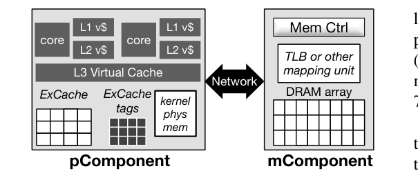
Key takeaways
- Monolithic servers bundle CPU, memory and storage into one allocation and failure unit, which the paper's own cluster traces tie to roughly 50% CPU/memory utilization.
- Splitkernel: disseminate OS functionality into per-component monitors that share no or minimal state and talk only over the network, unlike multi-kernels, which still assume a shared, coherent server.
- LegoOS separates processor and memory completely: pComponents keep only virtually addressed caches (ExCache) and run threads; mComponents hold all page tables, address mappings and data, and run entirely in kernel mode.
- LegoOS exposes a Linux-compatible vNode abstraction, backward compatible with Linux ABIs, and a process's memory and threads can be spread across multiple mComponents and pComponents.
- Measured on commodity hardware emulating disaggregated components: 1.3 to 1.7 times slower than monolithic Linux with the full working set in DRAM, 0.8 to 3.2 times faster than swap-based alternatives at equal local memory, and 17 to 49% better estimated MTTF than an equivalent monolithic cluster.
From a monolithic server to a splitkernel cluster
Why monolithic and multi-kernel OSes do not fit disaggregated hardware, the splitkernel architecture, and how LegoOS splits processor and memory.
1 · Why existing OS designs do not fit
Single-node OSes like Linux assume every hardware resource, memory, disk, NIC, is local and accessible without network messaging (Figure 1). Multi-kernel OSes (Barrelfish, Helios, Hive, fos) run a separate kernel per core or per device inside one server and pass messages over the server's local bus, but they still share common hardware like main memory and the network interface, and they do none of the cluster-wide resource management or component-failure handling that disaggregation needs.
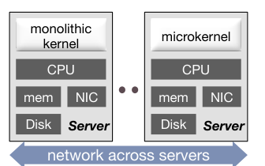
Running Linux at the processor and treating memory, storage and the NIC as remote devices (as in soNUMA) avoids rewriting the OS, but every memory access then pays full network cost, and the processor becomes a single point of failure for the whole application.
2 · The splitkernel architecture
Splitkernel's answer: when hardware is disaggregated, disseminate the OS too. Each hardware component gets its own monitor, a piece of OS functionality running on that component's own controller (a low-power core, an ASIC, or an FPGA). Monitors are loosely coupled and share no or minimal state; a monitor operates locally for its own hardware and messages other monitors only when it needs their resources.
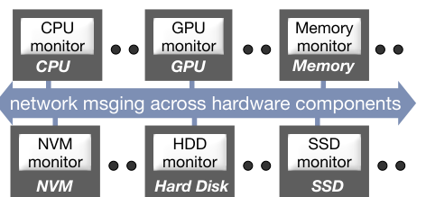
- Split OS functionality into monitors, each managing, virtualizing and protecting one hardware component.
- Run each monitor on its own component's controller. New hardware is adopted by building the device, writing its monitor, and attaching it to the network, with no server redesign.
- Communicate only by network messaging across non-coherent components. Splitkernel does not provide or assume cache coherence between components; applications build whatever consistency they need with messages. Coherence within a component (e.g., across cores of one CPU) is unaffected.
- Keep only two tasks global: coarse-grained resource allocation across components, and component failure handling. Everything else is decided locally by each monitor.
3 · LegoOS' abstraction: vNodes
LegoOS instantiates splitkernel with three component types: pComponent (processor), mComponent (memory), sComponent (storage). Users see a set of virtual nodes (vNodes), each with a unique ID, virtual IP, and storage mount point, that behave like ordinary Linux machines; internally a vNode's threads, memory and files can be spread across many physical components, and one component can serve many vNodes. LegoOS supports 113 common Linux syscalls so unmodified Linux binaries and distributed applications run directly on a set of vNodes.
One consequence of not providing cross-component coherence: LegoOS does not support writable shared memory across processes (e.g., MAP_SHARED). The authors found no instance of this pattern in the datacenter applications they studied, and supporting it would have added significant hardware and software complexity; applications needing cross-process writable sharing must instead use message passing.
4 · Separating processor from memory
Moving all memory hardware, page tables, TLBs, physical memory, to mComponents leaves pComponents with nothing but virtual addresses to work with. LegoOS therefore organizes every level of a pComponent's cache hierarchy as a virtually indexed, virtually tagged cache. Virtual caching raises two classic problems: synonyms (one physical address reachable by multiple virtual addresses, from shared memory) and homonyms (two address spaces reusing the same virtual address for different data). LegoOS sidesteps synonyms by disallowing writable inter-process sharing (Section 3), and solves homonyms by tagging each cache line with an address-space ID (ASID).
5 · ExCache: a cache, not main memory
Network latency rules out routing every memory access across the wire, but the paper found strong locality in real applications: 90% of PowerGraph's accesses hit just 0.06% of its memory (95% hit 3.1%), with similar skew for TensorFlow (22%/36%) and Phoenix (5.1%/6.6%). LegoOS exploits this by keeping a small amount of pComponent-local DRAM or HBM, organized not as main memory but as an explicit cache, ExCache, sitting below the processor's last-level cache. Each ExCache line carries a virtual-address tag and read/valid permission bits set by software and checked by hardware.
- Hits are pure hardware. The cache controller maps a virtual address to an ExCache set, compares tags, and returns the line on a hit, with no TLB lookup needed at the pComponent at all.
- Misses trap to LegoOS software, which is more complex than a traditional cache miss: the process monitor fetches the line from the owning mComponent over the network, picks a victim to evict (FIFO or approximate LRU), writes the victim back if dirty, and inserts the new line.
- A small amount of pComponent DRAM/HBM is set aside for LegoOS' own kernel data, addressed directly with physical addresses so the kernel never has to go to an mComponent for its own bookkeeping.
Because pComponents need no address mapping of their own, moving TLBs entirely to mComponents also removes TLB misses from the pComponent's critical path.
6 · Distributed virtual memory management
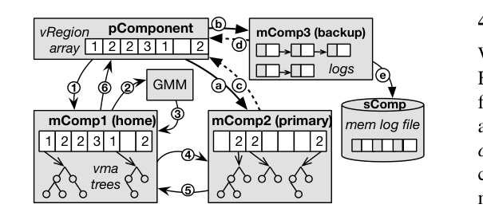
No user code runs on an mComponent; it runs entirely in kernel mode and owns the real virtual-to-physical mapping work. LegoOS uses a two-level scheme to keep this distributed without excessive network chatter:
- Coarse level: vRegions. Each process's virtual address space is divided into large, fixed-size vRegions (e.g., 1 GB). Every active vRegion is owned by exactly one mComponent, which handles all memory accesses and virtual-memory requests that fall in it.
- Fine level: vma trees. The owner of an active vRegion keeps a tree of virtual memory areas (vmas), the address ranges and permissions a Linux process would normally track in its own vma list.
- A home mComponent is assigned to each new process at creation (by a global memory manager, GMM) and accepts all virtual-memory syscalls (
brk,mmap,munmap,mremap) for that process. It keeps only a vRegion array (which mComponent owns which vRegion, and free space left) so it can route a request, not the memory contents themselves. - Allocation path: a request goes from pComponent to home mComponent; if an existing active vRegion has room, that vRegion's owner performs the allocation; otherwise the home mComponent asks the GMM to pick an owner for a newly activated vRegion, based on free physical memory and access load.
- Access path: after allocation, a pComponent sends memory requests directly to the mComponent that owns the relevant vRegion, using a cached copy of the vRegion array, without going through the home mComponent each time.
7 · Cutting cold-miss cost: p-local lines
A large share of ExCache misses turned out to be cold misses on freshly allocated anonymous memory, whose initial content is always zero. LegoOS avoids a network round trip for these: on first access to a new anonymous region, the process monitor allocates an ExCache line directly, fills it with zeros, and sets its permission from the recorded region metadata, without telling any mComponent. Such p-local lines live only in ExCache; physical memory and address mappings at the mComponent are allocated only when the line is later evicted dirty, delaying physical allocation until write time. This is safe because LegoOS pComponents never share memory with each other.
8 · Storage and reliability
sComponents implement a flat, stateless file server (each request is self-contained, similar to NFSv2), locating files by full path in a hash table, since most datacenter applications use only a few hundred files. The storage buffer cache, however, is placed at mComponents rather than sComponents, since storage controllers have limited onboard memory; one file's buffer cache lives under one mComponent to avoid coherence traffic.
LegoOS currently handles only mComponent failure, reasoning that spreading a process's memory across more components raises the chance any one fails, while processes are not split across pComponents (so pComponent failure resembles a single processor failing in a monolithic server) and storage reliability is left to applications, as is common practice. Instead of full replication (2x space cost), each vma has one primary mComponent, one secondary mComponent holding an append-only log and a replica of the vma tree, and a backup file at an sComponent; a dirty ExCache flush goes to both primary and secondary in parallel, and the secondary lazily persists its log to storage. This provides best-effort memory reliability (not user-persistent data, so best-effort is acceptable) at a fraction of full replication's cost.
9 · Implementation
LegoOS is implemented in C for x86-64, about 206K lines of source code (56K of it drivers), ported largely from Linux to reuse its driver code and common data structures/algorithms rather than writing new ones from scratch. It supports 113 syscalls, 15 pseudo-files, and 10 vectored syscall opcodes, which the authors found sufficient to run several unmodified datacenter applications. Since no disaggregated hardware exists yet, components are emulated on commodity servers: mComponents and sComponents are servers with usable cores artificially capped at two, and pComponents are servers with usable main memory capped down and configured as ExCache. Three network stacks are provided: a custom RDMA-based RPC framework (based on LITE) used for all internal LegoOS communication, a custom socket-over-RDMA implementation, and a traditional TCP/IP stack (via lwIP) for compatibility; applications choose sockets, LegoOS components always use the RPC stack.
A design tension the authors report: strict "clean separation" sometimes cost performance (e.g., mremap needing ExCache-set-aware placement, which only an mComponent that knows about ExCache sets could provide). Their resolution was to let pComponents pass small hints about anonymous-memory permissions to enable optimizations like p-local lines, while keeping the separation principle for everything else.
Results from running this implementation are discussed in the Evaluation tab.
Evaluation
Microbenchmarks of each component type, two unmodified applications, and a qualitative failure-rate analysis.
All experiments ran on a cluster of 10 machines, each with two Intel Xeon E5-2620 (2.40 GHz) processors, 128 GB DRAM, and a 40 Gbps Mellanox ConnectX-3 InfiniBand adapter, connected through a 40 Gbps InfiniBand switch. The Linux baseline is v4.9.47. Disaggregated components are emulated on these same commodity machines by capping usable cores (mComponent, sComponent) or usable memory configured as ExCache (pComponent).
| What | Value in the paper |
|---|---|
| Platform | 10-machine cluster, dual Xeon E5-2620 2.40 GHz, 128 GB DRAM, 40 Gbps Mellanox ConnectX-3 IB per machine, 40 Gbps IB switch |
| Workloads | Custom memory/storage microbenchmarks; PARSEC (BlackScholes, Freqmine, StreamCluster); TensorFlow (Cifar-10); Phoenix MapReduce (Wikipedia dump) |
| Baselines | Single-node Linux v4.9.47 with enough local resources; Linux swap to local NVMe SSD; Linux swap to local ramdisk; InfiniSwap (remote memory over RDMA) |
| Metrics | Latency (network), KIOPS (memory/storage throughput), runtime slowdown vs. a fully-resourced Linux server, mean time to hardware failure (MTTF) |
LegoOS' own network stacks beat Linux's socket-over-InfiniBand
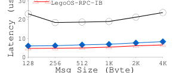
What it shows. Average message latency (µs) against message size (128 B to 4 KB), for three stacks: Linux-IPoIB (sockets over InfiniBand on Linux), LegoOS-Sock-o-IB (LegoOS' own socket implementation on RDMA), and LegoOS-RPC-IB (the custom RDMA-based RPC LegoOS uses for all internal component-to-component messaging).
What to take from it. Both LegoOS network stacks significantly outperform Linux's IPoIB across all message sizes. Since every pComponent-to-mComponent (and other cross-component) operation in LegoOS rides on LegoOS-RPC-IB, this low latency underlies the rest of the results; the paper credits a leaner code path and a design (registering physical addresses with the RDMA NIC) that avoids the NIC caching address translations.
mComponent throughput scales with worker threads, and p-local lines remove most of the cost
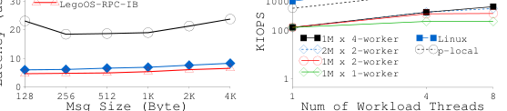
What it shows. KIOPS (thousands of I/O operations per second) for 4 KB sequential loads against the number of application (workload) threads (1, 4, 8), for several mComponent configurations (one or two mComponents, with one, two or four worker threads each) run against an oversized, empty 32 GB ExCache so every access is a cold miss, compared to single-node Linux and to the p-local optimization.
What to take from it. More worker threads per mComponent and more mComponents both raise throughput when the application has enough parallelism, but gains taper off past about four total worker threads. The p-local line optimization (Section 7 of How It Works) is far faster than going to an mComponent at all, and the gap between p-local and native Linux throughput isolates the pure overhead of trapping into LegoOS and setting up an ExCache line.
Storage throughput tracks Linux on reads; fsync is costlier over the network
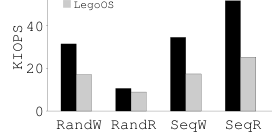
What it shows. KIOPS for sequential and random 4 KB reads and writes (RandW, RandR, SeqW, SeqR) on a 25 GB file on a Samsung PM1725s NVMe SSD, comparing single-node Linux to LegoOS (one mComponent holding the file's buffer cache, initialized empty on both systems; writes followed by fsync to force data to the SSD).
What to take from it. Linux's throughput is bounded by the SSD itself. LegoOS' random-read throughput is close to Linux because the SSD's random-read bandwidth is already the bottleneck, leaving little room for network overhead to show. Sequential read exposes more of a gap because the SSD is faster there, so network cost matters more. Writes with fsync are the weakest case for LegoOS: a plain write needs one network round trip (pComponent to mComponent) and fsync needs two (pComponent to mComponent, then mComponent to sComponent), versus local calls on Linux.
PARSEC slowdown is modest and is bounded by a single mComponent worker thread
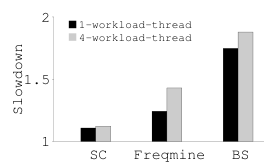
What it shows. Slowdown of LegoOS (one pComponent with 128 MB ExCache, one mComponent with one worker thread, one sComponent) relative to single-node Linux with the full working set resident, for StreamCluster, Freqmine and BlackScholes, each run with 1 and 4 workload threads.
What to take from it. StreamCluster performs best because it accesses memory in roughly 110 MB batches, a pattern that fits well within ExCache. BlackScholes and Freqmine have larger working sets (630 to 785 MB) and so suffer more ExCache misses. All three workloads do worse with more workload threads, because the single mComponent worker thread becomes the bottleneck for handling their combined memory-request rate; this is consistent with Result 2's finding that mComponent throughput depends on its own thread count, not just the application's parallelism.
TensorFlow: LegoOS beats SSD, ramdisk and remote-memory swapping at equal local memory
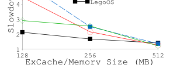
What it shows. Runtime slowdown (relative to a Linux server with enough local memory for TensorFlow's full 0.9 GB working set on the Cifar-10 dataset) for LegoOS, Linux swapping to local NVMe SSD, Linux swapping to local ramdisk, and InfiniSwap, as ExCache (or, for the other systems, main memory before falling back to swap) is set to 128, 256 and 512 MB.
What to take from it. At roughly 25% of the working set as local resource, LegoOS is 1.68 times slower than the fully-resourced Linux baseline, and is faster than all three swap-based alternatives at the same local-memory size, even the local-ramdisk case, because ramdisk swapping in Linux incurs extra memory copies through the buffer cache that LegoOS avoids. The paper attributes LegoOS' efficiency to its RDMA RPC stack, a simplified miss-handling code path versus Linux paging, and the p-local optimization (up to 5% of the total gain), together with other RPC-level optimizations (unsignaled mComponent replies, piggy-backed flush-and-fill) that the paper credits with up to 50% combined improvement.
Phoenix shows the same pattern at a different working-set size
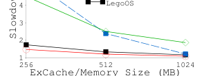
What it shows. The same comparison as Result 5, but for Phoenix (MapReduce on a Wikipedia dump, 1.7 GB working set), with ExCache/memory sizes of 256, 512 and 1024 MB.
What to take from it. At roughly 25 to 30% of the working set as local resource, LegoOS is 1.34 times slower than fully-resourced Linux, again outperforming SSD, ramdisk and InfiniSwap swapping at equal local memory. Taken with Result 5, this is the paper's headline application-level result: LegoOS' overhead versus a monolithic machine with unlimited local memory is modest, while it still beats conventional ways of giving a memory-constrained machine access to more memory.
ExCache miss handling: free lists and piggybacking beat bitmaps and plain LRU
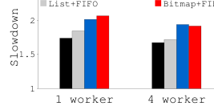
What it shows. Slowdown running TensorFlow (Cifar-10, 256 MB 64-way ExCache, one mComponent, one sComponent) under four ExCache management combinations, free list plus FIFO plus the piggyback optimization (combining a dirty-flush and a miss-fill into one RPC when both target the same mComponent); free list plus FIFO; free list plus LRU; and bitmap plus FIFO, each with 1 and 4 mComponent worker threads.
What to take from it. Free lists beat linearly scanning a bitmap for a free line, and the gap widens as associativity rises. Somewhat surprisingly, FIFO beats LRU despite LRU exploiting access locality, which the paper attributes to lock contention between the background LRU-sweeping thread and the miss handler. Piggybacking the flush and fill into one RPC is a clear win on top of either, and the combination of piggyback, free list, and FIFO performs best overall.
More mComponents, replication, and concurrent applications each add overhead
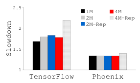
What it shows. Slowdown for TensorFlow and Phoenix as the number of mComponents grows from one to four (1M, 2M, 4M), with and without memory replication (2M-Rep, 4M-Rep).
What to take from it. Counterintuitively, adding mComponents lowers performance by up to 6%, because the piggyback optimization (Result 7) only applies when a flush and a subsequent miss target the same mComponent, which happens less often as data spreads across more mComponents. Replication adds 2% to 23% overhead (plus a constant 1 MB space cost for the backup log per vma), because the same application thread sends data to the backup mComponent before the primary, serializing the two writes. Separately (Figure 15 in the paper), running one TensorFlow and one Phoenix instance together shows both applications slow down when they share a single mComponent, since its single worker thread must serve both; adding worker threads helps a little, and in a configuration with two pComponents and two mComponents, performance again tracks available ExCache size, consistent with the single-application results.
The paper also reports a qualitative failure analysis (its Table 1): using published per-device mean-time-to-replacement figures (processor 204.3 years, disk 33.1, memory 289.9, NIC 538.8, power 100.5, other 27.4) and computing each system's MTTF as the harmonic mean across its devices, a monolithic server's estimated MTTF is 5.8 years, while LegoOS components, assuming either the same total hardware as the monolithic cluster or LegoOS' better resource packing (about half the CPU/memory devices, matching the roughly 50% utilization measured in the Google/Alibaba traces), are estimated at 6.8 to 8.7 years, a 17% to 49% improvement attributed to simpler per-component hardware (e.g., no motherboard) and better packing.
FAQ
Q·What is "splitkernel" exactly, and how is it different from "LegoOS"?▾
Splitkernel is the general OS architecture: disseminate OS functions into per-hardware-component monitors that talk only by network messages. LegoOS is the paper's concrete instantiation of splitkernel, built for three component types (processor, memory, storage) and implemented to be Linux-ABI compatible. The paper is explicit that other splitkernels, with different monitor designs or hardware targets, are possible.
Q·How is splitkernel different from a multi-kernel OS like Barrelfish?▾
A multi-kernel still runs inside one physical server: each core or device gets a kernel, and those kernels pass messages over the server's internal bus while sharing common hardware like main memory and the NIC. Splitkernel's monitors run on independent, network-attached hardware components with no shared hardware and no assumed coherence, and splitkernel additionally does cluster-wide resource allocation and component failure handling, tasks a multi-kernel never needs because it lives inside one failure domain.
Q·Why does LegoOS refuse to provide cache coherence across components?▾
At the scale the paper targets (hundreds to thousands of heterogeneous, non-coherent components), the network bandwidth needed to maintain coherence would be far higher than the bandwidth needed for applications to exchange explicit messages for the consistency they actually require. This is also why LegoOS disallows writable shared memory across processes.
Q·What is ExCache, and why not just use the pComponent's local DRAM as ordinary main memory?▾
ExCache is a software/hardware-managed cache of memory lines sitting below the processor's last-level cache. The paper deliberately makes it a cache rather than main memory to keep a clean separation: all real memory allocation and address mapping lives at mComponents, so a pComponent never has to manage its own page tables or decide what is "real" memory versus a cached copy.
Q·What happens on an ExCache miss?▾
It traps into LegoOS as a page fault (ExCache lines are implemented as 4 KB pages so that x86's hardware-managed TLB, which can't be intercepted mid-walk, still lets LegoOS regain control). The faulting application thread itself (not a separate kernel thread) picks an ExCache set from the virtual address, evicts an entry if the set is full (writing it back to its owning mComponent if dirty), and fetches the needed line over the custom RDMA RPC stack, taking about 6.5 µs in the paper's measurements.
Q·Why can't applications share writable memory across processes in LegoOS?▾
Writable cross-process sharing creates the "synonym" problem for virtual caches (one physical location reachable through multiple virtual addresses, whose cached copies could then disagree) and would require some coherence mechanism across pComponents, which splitkernel deliberately omits. The authors note they found no instance of this pattern (e.g., POSIX shared memory) in the datacenter applications they studied, and had implemented support for it before removing it due to its complexity.
Q·Does LegoOS require rewriting applications?▾
No, as long as an application does not rely on writable shared memory across processes. LegoOS supports common Linux syscalls and Linux ABI, so unmodified Linux binaries can run; the paper demonstrates this with stock TensorFlow and Phoenix.
Q·Is any of this tested on real disaggregated hardware?▾
No. Since programmable, network-attached CPU/memory/storage controllers of the kind splitkernel assumes do not yet exist commercially, the paper emulates components by artificially limiting usable cores (for mComponents and sComponents) or usable memory (for pComponents, configured as ExCache) on ordinary commodity servers connected by InfiniBand.
Q·How much slower is LegoOS than a normal server?▾
With about 25% of an application's working set available locally as ExCache, LegoOS is 1.3 to 1.7 times slower than a monolithic Linux server that holds the entire working set in local DRAM. Compared against monolithic servers with the same (small) amount of local memory that swap the rest to SSD, ramdisk, or remote memory over InfiniSwap, LegoOS is actually 0.8 to 3.2 times as fast, because its code path for fetching missing data is leaner than Linux's paging and swap machinery.
Q·How does LegoOS handle a memory component failing?▾
Each memory region (vma) has a primary mComponent and a secondary mComponent, plus a backup log file at an sComponent. Dirty data is sent to both primary and secondary when flushed from ExCache; the secondary lazily persists its log to storage. If a primary mComponent fails, LegoOS replays the secondary's log and the sComponent's backup file to recover. This is "best-effort" reliability, chosen because losing in-memory (not persistent) data is an acceptable, bounded risk, and full replication would double memory cost.
Q·Why does adding more mComponents sometimes make performance worse?▾
LegoOS can combine a dirty-cache-line flush and a new-line fetch into a single network round trip only when both target the same mComponent (the "piggyback" optimization). Spreading an application's data across more mComponents makes a flush and the following miss less likely to land on the same component, so this optimization fires less often, costing up to 6% in the paper's measurements even though more mComponents add raw capacity and parallelism.
Q·How is this related to prior "disaggregated memory" or "remote memory" work?▾
Systems such as InfiniSwap, FaRM, and the original disaggregated-memory proposals by Lim et al. let a server (still monolithic in its own hardware) use memory located elsewhere, either as a swap device or through memory-like instructions. LegoOS goes further by removing local memory from the processor's hardware model entirely: pComponents have no main memory of their own at all, only a cache, and all memory hardware and management genuinely lives on separate, independently failing mComponents.